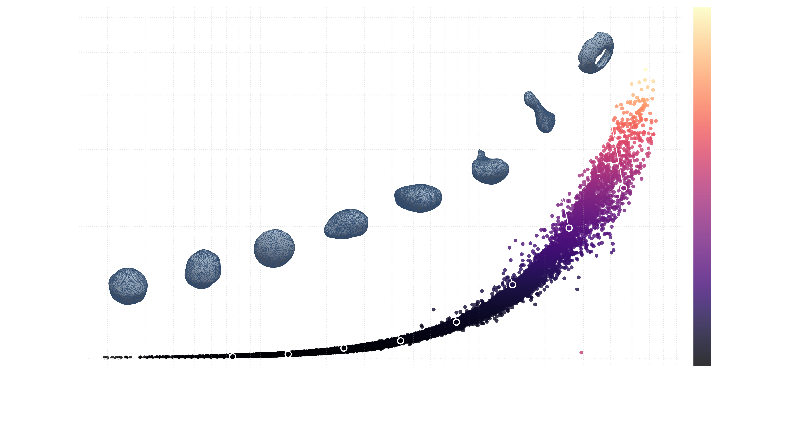
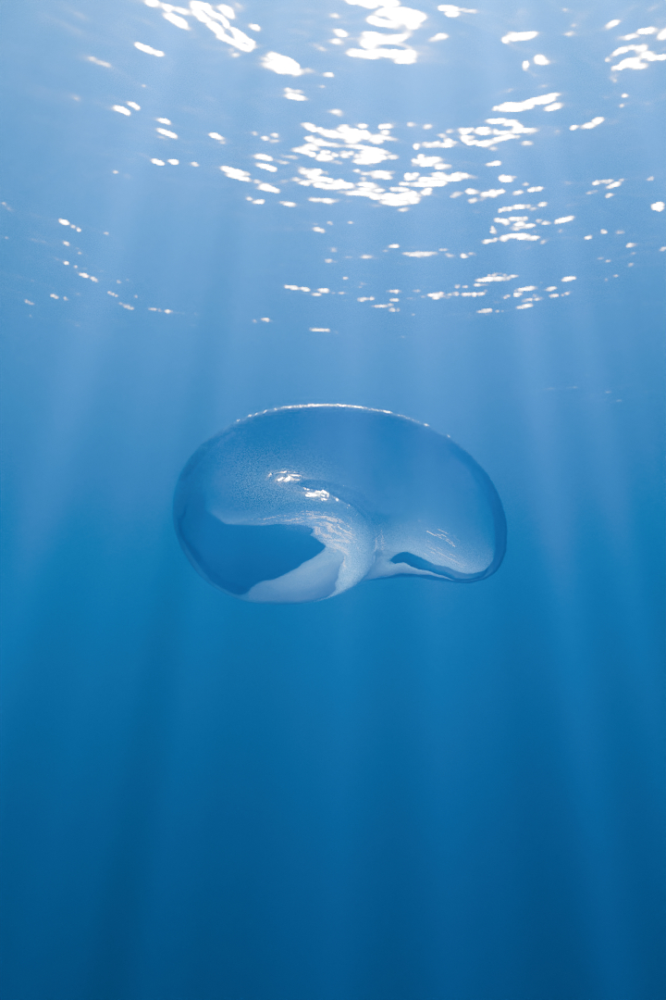
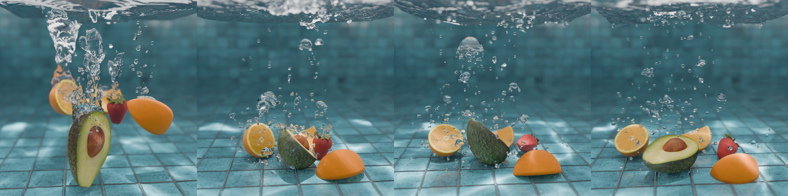

News
- Dec 2026 To be presented at SIGGRAPH Asia 2026 in Kuala Lumpur, Malaysia.
- Sept 2026 Code, trained models, and the 10k benchmark dataset are released on GitHub.
- Aug 2026 BubbleGym is accepted to SIGGRAPH Asia 2026, Conference Papers track.
Abstract
Water sounds are dominated by the acoustic radiation of entrained air bubbles. The resonant frequency of a bubble depends critically on its size, shape, and proximity to nearby boundaries, and is governed by the capacitance of the bubble in the exterior mixed-boundary Laplace problem. Existing bubble-frequency models face a difficult trade-off: spherical approximations are efficient but inaccurate for deformed bubbles common in fluid simulations (multiple semitones of pitch error), whereas boundary element methods (BEM) accurately account for nonspherical geometry but are prohibitively expensive. A practical method for bubble frequency estimation is, therefore, highly desirable for the efficient authoring of physics-based water sounds.
In this paper, we present BubbleGym, a framework for efficient, shape-aware bubble source modeling. BubbleGym introduces a benchmark dataset of 10k nonspherical bubble meshes with ground-truth resonant frequencies. We first propose a moment-matching ellipsoidal proxy model that improves efficiency but remains limited when handling strongly deformed shapes, such as bent bubbles. We then adopt a learned, compact, scale-invariant mapping from a curated set of bubble shape features to resonant frequency. We have observed that the resulting model runs up to 1428× faster than BEM while maintaining a mean frequency error of less than 1% (under 17 cents, below the perceptual JND for transient sounds) on the test set. Integrated into a complete water-sound synthesis pipeline, our method enables high-fidelity audio for complex, bubble-rich scenes at a fraction of the cost of direct BEM evaluation.
Video
Explore demos and code

Interactive shape space All 10,000 bubbles in 3D, coloured by frequency. Hover a point to see its mesh. 10,000 meshes · 8 descriptors · BEM ground truth Benchmark dataset One CSV carrying every shape descriptor and reference frequency, alongside the meshes and thumbnails.git clone https://github.com/zhehaoli1999/\
BubbleGym-OpenSource
cd BubbleGym-OpenSource
pip install -r requirements.txt
# dataset/ BEM ground truth + meshes
# python/bem/ BEM solver
# python/shape_feature/ descriptors
# python/freq_model/ models + weights
Bubble Theater Three procedural sequences — ellipsoid, curl noise, Enright — with every frequency model against BEM. Single rising bubble
A sphere deforming into a torus as it rises. Our model
tracks BEM; Minnaert stays fixed.
Single rising bubble
A sphere deforming into a torus as it rises. Our model
tracks BEM; Minnaert stays fixed.

Fruit Splash Five fruit dropped into a tank. 54,116 bubbles, each with BEM, surrogate and Minnaert frequencies. Underwater exhalation
A character exhales underwater, producing large bubbles
that deform as they rise.
Underwater exhalation
A character exhales underwater, producing large bubbles
that deform as they rise.
BibTeX
@inproceedings{li2026bubblegym,
author = {Li, Zhehao and Wu, Kui and Li, Wei and James, Doug L.},
title = {BubbleGym: A Practical Shape-to-Frequency Model for Acoustic Bubbles},
booktitle = {SIGGRAPH Asia 2026 Conference Papers (SA Conference Papers '26)},
year = {2026},
location = {Kuala Lumpur, Malaysia},
publisher = {Association for Computing Machinery},
address = {New York, NY, USA},
doi = {10.1145/3829340.3842193},
isbn = {979-8-4007-2842-6}
}Acknowledgments
We thank the anonymous reviewers for their feedback, and Adobe and Activision for their support. Houdini software was provided courtesy of SideFX. This work was supported in part by ONR Grant N000142512024. Zhehao Li acknowledges support from the Stanford School of Engineering Fellowship. Wei Li acknowledges support from the Shanghai Pujiang Program (25PJD058) and Shanghai Jiao Tong University startup funds.